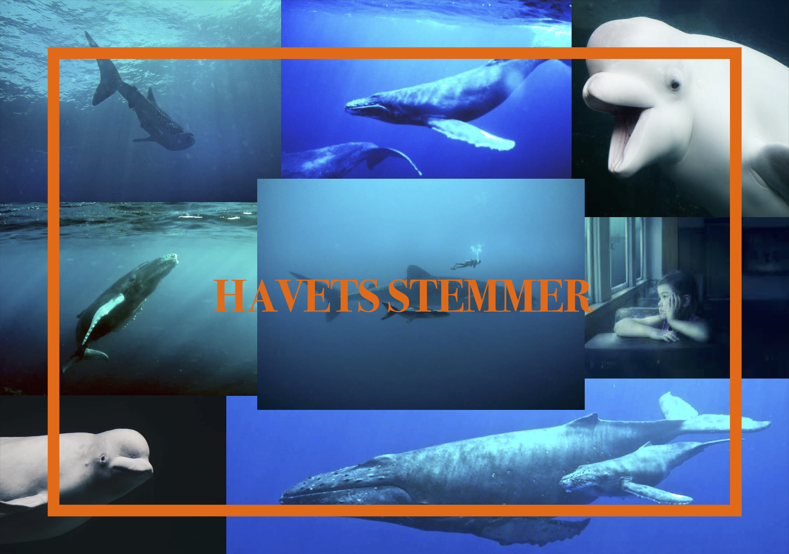
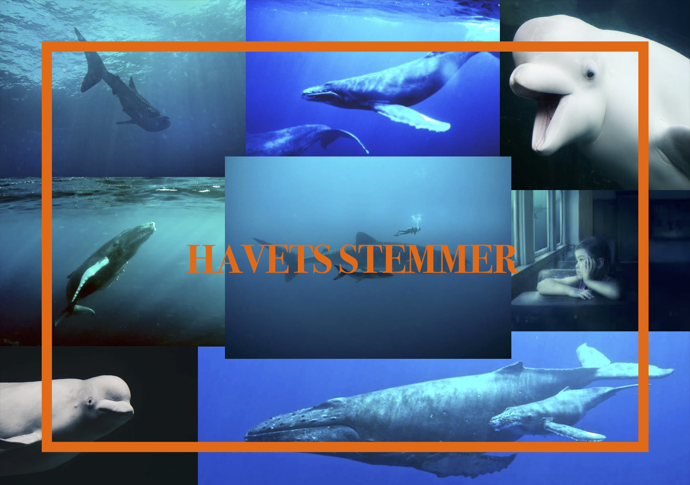

About
My name is Christopher Bill Wiberg, I’m 27 years old and I live in Copenhagen. I study multi-media design at UCL in Odense, Denmark, where I’m learning about project management, content creation, UI/UX, different Adobe programs and many other interesting things. Because of my six years of experience from the hospitality and film business, I hope I can get to work on new and exciting projects that involves teamwork.
In my everyday life I enjoy going for long walks, listen to music, go to the cinema, eat well and hang out with my friends and family. These are all essential elements to my private life and therefore also to my professional. Through and with them, I'm able to charge my batteries and give it all I got once I enter the office.
I pride myself on always having a positive and ambitious attitude in any project I choose to engage in.
My work
Photographer
Throughout the years I have been fortunate enough to travel around to different spots of the world. Here is a selection of my personal favorites.


Creative Project Leader
* is a self-invented title that serves the purpose of covering my responsibility and qualities in the respective projects.
This section represents a variety of project that I'm especially proud of. Amongst them you will find school related projects from resent times, but also from the past, which is more oriented towards storytelling and character work.
A school project where we re-designed bold.dk website using Adobe XD
 
A school project where we created an interactive installation for Naturama, Svendborg.
My group and I chose to do an quiz about whales called "Voices of the Ocean".
ASSISTANT DIRECTOR

WRITER, PRODUCER, DIRECTOR, ACTOR, EDITOR
CREATOR